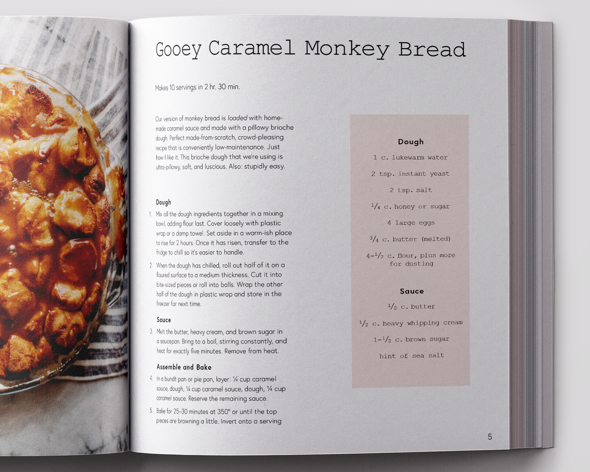
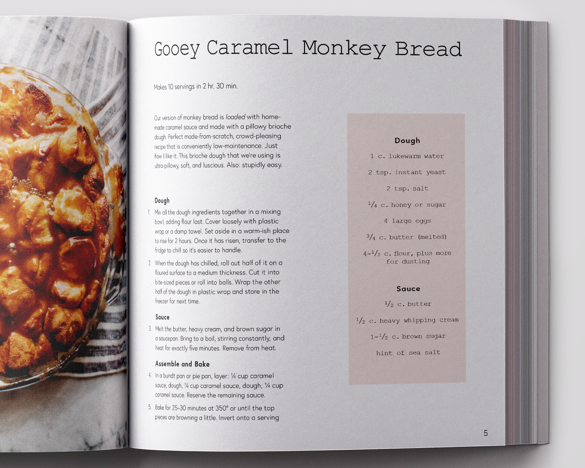

meatless cookbook
This conceptual vegetarian cookbook was designed with the inspiration of my grandmother's – and now my mother's – recipe box. Food is something that brings people together, so I wanted this cookbook to feel inviting yet straightforward and simple. All recipes and images used are from Martha Stewart and Pinch of Yum cooking blog.
![[Hidden]](img/BreadSpread.png)
![[Cover]](img/MeatlessCover2.png)
![[Spaghetti]](img/SpaghettiSpreadStraight.png)
![[Spaghetti]](img/SpaghettiSpread.png)
![[Chapter Opener]](img/ChapterOpener.png)
![[Monkey Bread]](img/MonkeyBreadSpread.png) 

![[Taco]](img/TacoRecipeSpread.png)